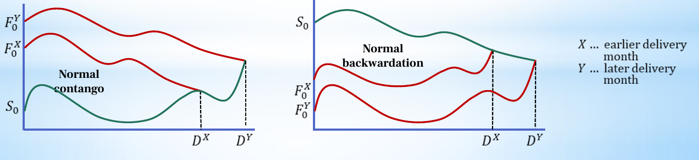

Interpret basis and explain conditional convergence
Useful first: Distinguish futures contract operation and its limits
Lesson outline
- 02IntroductionSee the main question, learning objectives and prerequisites.
- 03Key definitions and conceptsGet familiar with the important terms and notation.
- 04Basis and calendar spread are different comparisonsFor a delivery month the stated quantities, let the stated quantities be the spot price at time t and the stated quantities the futures price at that time for delivery in the stated…
- 05Why the prices converge at deliveryThe source's no-arbitrage argument compares executable spot purchase/sale with delivery under the matching futures contract.
- 06Connect the reasoningExplore connect the reasoning.
- 07Worked exampleFollow a complete application of the reasoning.
- 08Practise the reasoningWork through written tasks, with optional support and solutions.
- 09Check your reasoning: an offline quizCheck your choices and see feedback without a connection.
- 10Check your understandingReview the key distinctions and check what you can explain.
- 11Test yourself laterTry another prepared question before rereading.
- 12SourcesFind the materials and limits behind the lesson.
Introduction
In this lesson, interpret basis and explain conditional convergence.
2.1 What you’ll learn
- Given spot and two futures maturities compute the course basis and calendar spread
- Identify the supplied lecture orderings
- Explain convergence using both spot/futures delivery directions with execution assumptions.
- Distinguish short selling an asset from a short futures position, EDSP procedure from a universal formula, and endpoint convergence from smooth movement. No cost-of-carry pricing model is included.
2.2 Before you begin
Check the foundations
Does a June futures contract equal a September one, and does a short futures trade require borrowing the asset?
Reveal foundation explanation
different maturities are different obligations; short futures is selling the contract, distinct from borrowing an asset for a spot short sale.
Key definitions and concepts
- Basis: Spot price minus the price of the specified futures contract.
- Calendar spread: The specified earlier-delivery futures price minus later-delivery price.
- Convergence: Matching spot and futures reference values coincide at delivery under compatible no-arbitrage conditions.
Basis and calendar spread are different comparisons
For a delivery month \(X\), let \(S_t\) be the spot price at time t and \(F_t^X\) the futures price at that time for delivery in \(X\). This course uses
The basis compares spot with one futures maturity. Contango means \(F_t^X>S_t\), so the basis is negative; backwardation means \(F_t^X<S_t\), so it is positive. Some markets use the opposite definition, \(F-S\); always state the convention before assigning signs. The seminar sometimes spells this quantity “Base,” but the lecture and handout use “basis.”
A calendar spread compares two futures prices. If \(X\) is the earlier delivery month and Y the later one, the lecture defines
It also notes the opposite sign convention. The lecture's normal contango ordering is \(F_t^Y>F_t^X>S_t\), while its normal backwardation ordering is \(F_t^Y<F_t^X<S_t\). These are the meanings of those labels in the supplied lecture; do not substitute a different definition of “normal” without stating it.
The seminar lists market expectations, cost of carrying a position (including opportunity cost), and payments expected before delivery as reasons spot and futures prices can differ. Week 1 introduces these factors; the cost-of-carry pricing model in the later handout chapter is outside this ingestion scope.
Why the prices converge at delivery
The source's no-arbitrage argument compares executable spot purchase/sale with delivery under the matching futures contract. If \(F>S\) at delivery, buy the asset spot for \(S\) and deliver it through a short futures position for \(F\).
If \(S>F\), buy through a long futures position for \(F\) and sell the asset spot for \(S\). Either case produces a positive difference before trading, delivery or borrowing costs.
The handout's examples use \(F=100\), \(S=80\) or \(F=80\), \(S=100\), producing a difference of \(20\) per unit.
The theoretical conclusion is \(F_T=S_T\), hence \(B_T=0\). It presumes the compared asset is eligible for the contract and the required purchases, sales and deliveries can occur on the relevant terms;
otherwise the cash-flow comparison is not established. In the second case, the handout also describes selling a borrowed security spot, taking futures delivery and returning it. Short selling of the asset involves borrowing and later returning that asset;
it differs operationally from merely opening a short futures position.
The Exchange Delivery Settlement Price, or EDSP, is the price used in final settlement. The handout calls it the closing price on the last trading day, determined by the clearing house through an exact procedure.
Consider an average of selected spot quotations as its introductory description and says its determination implements zero basis. These descriptions establish that final settlement follows a defined reference procedure;
they do not supply a universal formula covering every contract type.

The green line is spot and the red lines are futures for the earlier month \(X\) and later month Y. Each futures line meets spot at its own delivery date \(D^X\) or \(D^Y\). The curves need not be straight or monotonic: convergence concerns the endpoint, not a prediction that either price moves smoothly toward it.
Connect the reasoning
- Keep prices contemporaneous; compare spot against one maturity for \(B\) and futures against futures for D. Do not call D a basis.
- Substitute the declared signs. A negative \(B\) says futures above spot; a negative D says later above earlier. Labels follow those comparisons, not a forecast of rising spot.
- At delivery if \(F>S\), buy eligible asset spot for \(S\) and deliver using a short futures for \(F\), gross difference \(F-S\). If \(S>F\), obtain via long futures for \(F\) and sell spot for \(S\), gross \(S-F\). A borrowing-based spot short sale requires asset borrowing and return; short futures itself is a contractual sale.
- These executable positive differences drive theoretical \(F_T=S_T\)/\(B_T=0\) only under eligibility/matching delivery, feasible purchase/sale/borrowing and ignored costs. Nonzero costs or unavailable trades break the simple comparison; do not assert a free guaranteed trade in all markets.
- EDSP is contract-defined final settlement reference. Sources describe a closing procedure/selected-spot average but do not supply one universal computation. Convergence concerns each contract's own delivery endpoint; neither spot nor futures must move smoothly or monotonically. The source convergence asset illustrates curved paths.
Worked example
Hypothetical \(S=80\),\(F^{X}=90\),\(F^{Y}=95\). \(B^{X}=-10\),\(D=-5\), lecture normal contango \(95>90>80\). At \(X\) delivery, hypothetical \(F=100\)/\(S=80\) offers spot buy \(80\) plus futures short delivery \(100\), gross \(20\)/unit if terms permit.
Reverse \(F=80\)/\(S=100\): obtain at \(80\) via long delivery and sell spot \(100\), gross \(20\); if spot sale precedes delivery, borrowing/return is needed.
Ignoring costs, both discrepancies disappear in the matching no-arbitrage endpoint. EDSP implements final contract reference;
do not infer a universal average or smooth price path.
Practise the reasoning
Write your reasoning before revealing an explanation. Begin with support, then apply the ideas to another situation.
8.1 Written exercise 1
Fill \(S=100\),\(F^{X}=95\),\(F^{Y}=90\): \(B^{X}=\underline{\hspace{1.5em}}\),\(D=\underline{\hspace{1.5em}}\), ordering label \(=\underline{\hspace{1.5em}}\).
Solve the following:
- At delivery \(F=110\),\(S=100\), specify the two legs and gross difference;
- reverse \(F=90\)/\(S=100\).
- What assumptions and EDSP/path caveats are needed?
Show a hint
Pause before calculating or choosing an explanation:
- What quantities, actors or outcomes are being compared? Write their roles, units and dates beside them.
- Which condition decides whether the relationship applies? Check the relevant definition before using a formula or classifying the case.
- What would have to remain fixed for your comparison to be meaningful? Work through one link in the reasoning at a time.
- How could you check the direction, boundary case or alternative explanation before stating your conclusion?
A local draft for your own study.
Reveal explanation
Key: \(B=+5\),\(D=+5\), lecture normal backwardation \(90<95<100\). First buy spot \(100\)/deliver short \(110\) gross \(10\);
reverse long delivery \(90\)/sell spot \(100\) gross \(10\). Eligible/matching feasible trades and ignored costs;
borrowing spot short distinct from futures short. \(B_T=0\) under assumptions; EDSP defined reference not universal formula, convergence not monotonic forecast.
Complete supported coverage.
Allowed help: reveal the named definitions, then at most two prepared hints in Misconceptions and correction.
8.2 Written exercise 2
At a time before delivery \(S=100\),\(F^{X}=105\),\(F^{Y}=110\), \(X\) earlier.
Solve the following:
- Compute \(B^{X}\) and \(D\), state sign conventions and lecture ordering;
- name the Week \(1\) drivers without constructing a pricing model.
- At delivery compare \(F=120\)/\(S=110\) and \(F=110\)/\(S=120\): give executable legs and gross profit for each, explain borrowing an asset versus short futures and the assumptions.
- State convergence, EDSP's role and whether it predicts monotonic paths.
A local draft for your own study.
Reveal explanation
Explanation: \(B=S-F^X=-5\),\(D=F^X-F^Y=-5\); normal contango \(110>105>100\).
Drivers expectations/carrying-opportunity costs/expected payments. Delivery first spot buy \(110\)/short-deliver \(120\) profit \(10\);
reverse long-delivery \(110\)/sell spot \(120\) profit \(10\) (borrow/return if spot short before delivery). Short futures merely opens contract;
not the asset-borrowing operation. Eligible matching asset, feasible trades/delivery/borrowing and ignored costs essential. \(F_T=S_T\),\(B_T=0\) conditional.
EDSP contract-defined final reference, no universal formula; no smooth/monotonic prediction.
All four components required.
8.3 Written exercise 3
Before delivery \(S=100\),\(F^{X}=96\),\(F^{Y}=92\).
Solve the following:
- Compute basis/spread under course conventions, classify lecture ordering and name introduced price-gap drivers.
- At delivery analyze \(F=55\)/\(S=50\) and \(F=50\)/\(S=55\), including legs/gross differences, asset short-sale distinction and limits.
- What do EDSP and convergence establish, and what do they not establish about interim paths?
A local draft for your own study.
Reveal explanation
Explanation: \(B=+4\),\(D=+4\); normal backwardation \(92<96<100\).
Expectations/carry and opportunity cost/expected payments. \(F=55\)/\(S=50\): buy eligible spot \(50\)/deliver short \(55\), gross \(5\). \(F=50\)/\(S=55\): long delivery \(50\)/spot sale \(55\),gross \(5\); borrowing-return if needed for earlier spot short, distinct from futures short.
Require execution/matching and ignored costs; otherwise simple arbitrage conclusion unsupported.
Conditional \(F_T=S_T\),\(B_T=0\); EDSP final reference procedure not universal average formula;
no monotonic interim movement. All four components required.
Check your reasoning: an offline quiz
Choose one answer per question. Check individual answers or check the whole quiz. Each option includes feedback on the reasoning, and everything works offline.
Reveal explanation
Respect the order in each defined subtraction: 80−90 and 90−95.
Reveal explanation
Buy the deliverable cheaply and sell it through the dearer delivery commitment.
Reveal explanation
The endpoint relation does not supply a universal price path or settlement-reference rule.
Check your understanding
Avoid these mistakes: calling \(F^{X}-F^{Y}\) basis; labeling negative \(B\) backwardation; calling all shorts borrowed assets; assuming convergence predicts a smooth fall. Correction: label each price before subtraction; endpoint argument compares executable trades on the same deliverable.
- Given spot and two futures maturities compute the course basis and calendar spread
- Identify the supplied lecture orderings
- Explain convergence using both spot/futures delivery directions with execution assumptions.
- Distinguish short selling an asset from a short futures position, EDSP procedure from a universal formula, and endpoint convergence from smooth movement. No cost-of-carry pricing model is included.
Test yourself later
Return to these questions after a break, before rereading the explanation. Use a question you have not just viewed.
11.1 Review question 1
\(S=70\),\(F^{X}=74\),\(F^{Y}=77\) before delivery.
Solve the following:
- Compute and interpret course \(B\)/\(D\) and normal ordering;
- name supported drivers only.
- At delivery use \(F=90\)/\(S=80\) then \(F=80\)/\(S=90\) to derive both leg pairs and gross profits.
- Distinguish borrowed-asset short from short futures and state feasibility/cost assumptions, EDSP role and convergence/path limits.
A local draft for your own study.
Reveal explanation
Explanation: \(B=-4\),\(D=-3\), normal contango \(77>74>70\). Introduced drivers expectations/carry-opportunity costs/expected payments, no later pricing model.
First spot buy \(80\)/short delivery \(90\),\(10\); reverse long delivery \(80\)/sell spot \(90\),\(10\).
Borrowing/return belongs to asset short sale if needed, futures short opens obligation. Eligible matching/feasible trade/delivery and ignored costs support \(F_T=S_T\),\(B_T=0\).
EDSP defined final reference not universal formula. Endpoint equality does not assert smooth/monotonic paths.
All four components required.
11.2 Review question 2
\(S=200\),\(F^{X}=190\),\(F^{Y}=180\), \(X\) earlier.
Solve the following:
- Calculate \(B\)/\(D\) with conventions, lecture ordering and note-supported drivers.
- At delivery compare \(F=210\)/\(S=200\) and \(F=200\)/\(S=210\): specify legs/gross difference each, short-selling versus short-futures distinction, assumptions, EDSP/convergence claim and whether declining futures throughout is necessary.
A local draft for your own study.
Reveal explanation
Explanation: \(B=+10\),\(D=+10\), normal backwardation \(180<190<200\). Drivers expectations/carry-opportunity costs/payments.
First buy spot \(200\)/short deliver \(210\) profit \(10\); reverse long receive \(200\)/spot sell \(210\) profit \(10\);
asset borrowing/return only for borrowed spot short. Execution, eligibility, matching and ignored costs required. \(F_T=S_T\),\(B_T=0\) under assumptions;
EDSP final specified procedure, not universal rule. No monotonicity required.
All four components required.
Sources
Show materials and lesson scope
- L10(EssentialsOfFuturesTrading).pptx, slide 8
- FI01(Futures Contracts).doc, Ch. I, LibreOffice-rendered p. 6
- 02_seminar.pdf, PDF p. 10
- FI01(Futures Contracts).doc, Ch. I, LibreOffice-rendered p. 7
- L10(EssentialsOfFuturesTrading).pptx, slide 9
- FI01(Futures Contracts).doc, Ch. I, LibreOffice-rendered p. 6–7
- L10(EssentialsOfFuturesTrading).pptx, slide 7, 9
Numerical and contextual illustrations are hypothetical unless explicitly described as a reported result. Historical data, model assumptions and unresolved source differences retain their stated limits.
These exercises are for self-study. Viewing a prepared item or solution may make that item unsuitable as a fresh check in a tutor chat. This page does not record an assessed learning result.